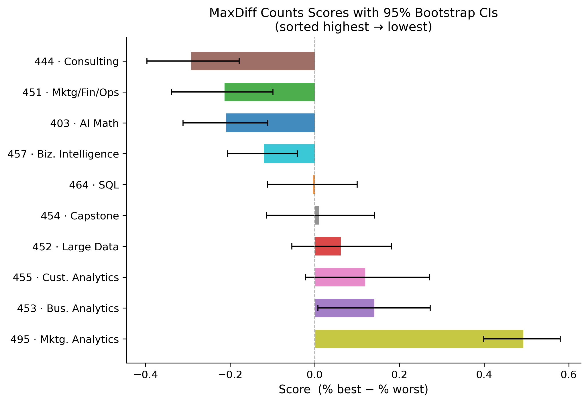
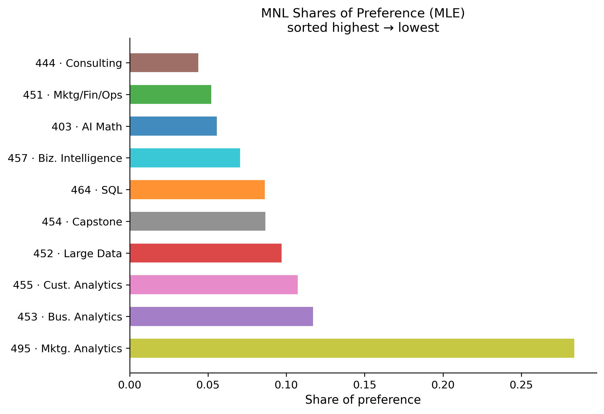
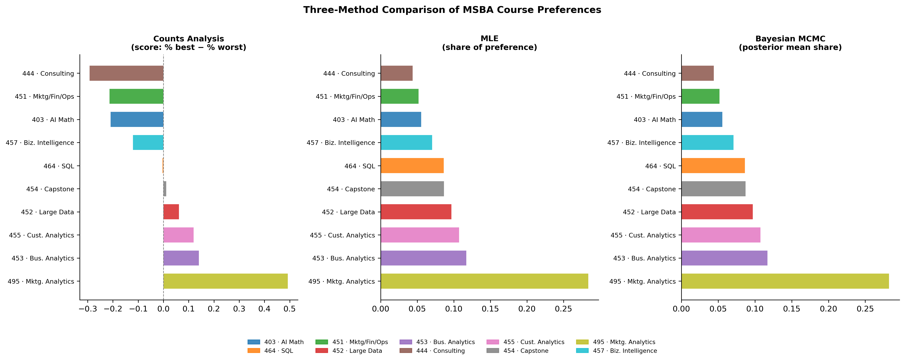

Counts, MLE, and Bayesian Estimation of the Multinomial Logit Model
statistics
MNL
MCMC
MaxDiff
marketing analytics
Author
Zejun Jiang
Published
May 27, 2026
Introduction
How do MSBA students actually rank their core courses? Asking people to rate each class on a 1–10 scale sounds easy, but there is a catch: respondents differ in how generously they use the scale. One student’s “7” is another’s “9.” The ratings end up measuring both preference and individual scale-use habits, which muddles any comparison.
MaxDiff (Maximum Difference Scaling, also called Best-Worst Scaling) sidesteps this problem. Instead of assigning a number to each item, respondents are shown a small subset of items and asked two simple questions: Which do you prefer most? Which do you prefer least? These forced trade-offs are harder to game — the respondent must make a real choice — and the resulting data carry much more information per question than a rating scale.
In this study, 85 MSBA students each completed 8 standard MaxDiff tasks. Each task displayed 4 of the 10 core MSBA courses. Students picked the course they would most prefer and the one they would least prefer from the four shown.
We analyze the data three ways and compare what each method tells us:
Counts analysis — a quick, model-free score for each course
MNL via Maximum Likelihood — a formal model of choice that extracts more signal from the data
Bayesian MNL via Metropolis-Hastings MCMC — the same model with full posterior uncertainty
N_resp = df_main["Record ID"].nunique()T_per = df_main.groupby("Record ID")["Task"].nunique().iloc[0]J_per =4# items per standard taskN_items =10print(f"Respondents (N): {N_resp}")print(f"Tasks per respondent (T): {T_per} (Tasks 1–8 are 4-item MaxDiff; Tasks 9–15 are 2-item anchor tasks)")print(f"Items per task (J): {J_per}")print(f"Distinct classes: {N_items}")
Respondents (N): 85
Tasks per respondent (T): 15 (Tasks 1–8 are 4-item MaxDiff; Tasks 9–15 are 2-item anchor tasks)
Items per task (J): 4
Distinct classes: 10
Tasks 1–8 are the standard MaxDiff screens (4 items each). Tasks 9–15 are anchor tasks: each course appears alongside a single “anchor” option (Item 11) to help calibrate the absolute utility scale. The main analysis below uses only the 680 standard 4-item tasks; the anchor items are noted but set aside.
Sanity Check
Every standard task must have exactly one “best” pick and exactly one “worst” pick.
A score near +1 means the course was almost always the favourite when shown; near −1 means it was almost always the least favourite; near 0 means it’s middle-of-the-pack.
We resample respondents with replacement 1,000 times to get 95% CIs on each score.
resp_ids = df4["Record ID"].unique()n_resp =len(resp_ids)resp_idx = {r: i for i, r inenumerate(resp_ids)}df4["_rid"] = df4["Record ID"].map(resp_idx)shown_mat = np.zeros((n_resp, 10))best_mat = np.zeros((n_resp, 10))worst_mat = np.zeros((n_resp, 10))for _, row in df4.iterrows(): r, it = row["_rid"], int(row["Item"]) -1 shown_mat[r, it] +=1if row["Response"] ==1: best_mat[r, it] +=1if row["Response"] ==-1: worst_mat[r, it] +=1rng_boot = np.random.default_rng(42)n_boot =1_000boot_scores = np.zeros((n_boot, 10))for b inrange(n_boot): s_idx = rng_boot.integers(0, n_resp, n_resp) sh = shown_mat[s_idx].sum(0) be = best_mat[s_idx].sum(0) wo = worst_mat[s_idx].sum(0) boot_scores[b] = be / sh - wo / shci_lo = np.percentile(boot_scores, 2.5, axis=0)ci_hi = np.percentile(boot_scores, 97.5, axis=0)counts["ci_lo"] = counts["Item"].map(lambda i: ci_lo[i-1])counts["ci_hi"] = counts["Item"].map(lambda i: ci_hi[i-1])
Results Table
Counts Analysis
Sorted by score (% best − % worst) · 4-item tasks only
Course
Shown
Best
Worst
% Best
% Worst
Score
MGTA 495 · Marketing Analytics
274
147
12
0.536
0.044
+0.493
MGTA 453 · Business Analytics
270
93
55
0.344
0.204
+0.141
MGTA 455 · Customer Analytics
276
104
71
0.377
0.257
+0.120
MGTA 452 · Large Data
276
77
60
0.279
0.217
+0.062
MGTA 454 · Capstone Project
272
72
69
0.265
0.254
+0.011
MGTA 464 · SQL
274
55
56
0.201
0.204
-0.004
MGTA 457 · Biz. Intelligence
266
23
55
0.086
0.207
-0.120
MGTA 403 · AI Math & Analytics
273
33
90
0.121
0.330
-0.209
MGTA 451 · Mktg / Fin / Ops
272
43
101
0.158
0.371
-0.213
MGTA 444 · Analytics Consulting
267
33
111
0.124
0.416
-0.292
Score Chart with 95% Bootstrap CIs

MGTA 495 · Marketing Analytics (this very class) dominates — students who were shown it picked it best more than half the time and almost never picked it worst. The next tier is Business Analytics, Customer Analytics, and Large Data. At the bottom sit Analytics Consulting and Mktg/Fin/Ops, both of which were frequently picked as the least preferred. The bootstrap intervals confirm these broad differences are not noise.
From MaxDiff Data to MNL Choices
The Choice Model
The MNL model assigns each course \(j\) a latent utility coefficient \(\beta_j\). When a respondent sees a set of four courses \(\{a, b, c, d\}\), the probability that course \(b\) is picked best follows the soft-max:
After the best is removed, the worst is picked from the remaining three — but now with utilities negated (the worst-picker is a best-picker on the reversed scale):
\[
P(\text{worst} = c \mid \text{best} = b) = \frac{\exp(-\beta_c)}{\exp(-\beta_a) + \exp(-\beta_c) + \exp(-\beta_d)}
\]
Each 4-item task therefore contributes two MNL observations to the likelihood.
Identifiability
The soft-max probability depends only on differences in utility, not absolute levels. Adding any constant to every \(\beta\) leaves all probabilities unchanged, so the model is only identified up to a location shift. We fix this by setting \(\beta_1 = 0\) (MGTA 403 as the reference) and estimating the remaining \(\beta_2, \ldots, \beta_{10}\) — nine free parameters.
Reshaping the Data
We convert the raw response rows into one record per task:
tasks_df = []for (resp, task), grp in df4.groupby(["Record ID", "Task"]): items = grp["Item"].values -1# 0-indexed rv = grp["Response"].values best_p =int(np.where(rv ==1)[0][0]) # position in this group worst_p =int(np.where(rv ==-1)[0][0]) tasks_df.append({"items": items,"best_pos": best_p,"worst_pos": worst_p})print(f"Total tasks: {len(tasks_df)} "f"({df4['Record ID'].nunique()} respondents × "f"{df4.groupby('Record ID')['Task'].nunique().max()} tasks)")print("First task — items (0-indexed):", tasks_df[0]["items"]," best pos:", tasks_df[0]["best_pos"]," worst pos:", tasks_df[0]["worst_pos"])
Total tasks: 680 (85 respondents × 8 tasks)
First task — items (0-indexed): [4 6 3 0] best pos: 1 worst pos: 3
The pre-built TASK_ITEMS, BEST_POS, and WORST_POS arrays (built once in the setup cell) hold the same information as numpy matrices, enabling vectorised likelihood evaluation.
MNL via Maximum Likelihood
Log-Likelihood
Summing over all \(N \cdot T = 680\) tasks, the log-likelihood is:
Reference: MGTA 403 (β₁ = 0) · sorted by share of preference
Course
β̂
SE
Share
MGTA 495 · Marketing Analytics
1.630
0.115
0.2839
MGTA 453 · Business Analytics
0.744
0.130
0.1171
MGTA 455 · Customer Analytics
0.656
0.120
0.1072
MGTA 452 · Large Data
0.555
0.115
0.0969
MGTA 454 · Capstone Project
0.443
0.116
0.0867
MGTA 464 · SQL
0.438
0.109
0.0862
MGTA 457 · Biz. Intelligence
0.236
0.116
0.0704
MGTA 403 · AI Math & Analytics
0.000
—
0.0556
MGTA 451 · Mktg / Fin / Ops
-0.067
0.115
0.0520
MGTA 444 · Analytics Consulting
-0.239
0.126
0.0438
MLE Share Chart

The MLE ranking is nearly identical to the counts ranking. MGTA 495 commands a share of 0.28 — nearly three times as large as any other course. The model makes explicit what the counts analysis hinted at: the preference gap between the top course and the rest is very large.
MNL via Bayesian Estimation
Posterior and Prior
The Bayesian posterior combines the likelihood with a prior on \(\boldsymbol{\beta}\):
We use a weakly informative multivariate normal prior \(\boldsymbol{\beta} \sim \mathcal{N}(\boldsymbol{0},\; 10 \cdot I)\) — a standard deviation of \(\approx 3.2\) on each coefficient, broad enough not to shrink the estimates meaningfully but tight enough to avoid numerical issues.
We use a random-walk Metropolis algorithm. At each iteration we propose a new parameter vector by adding Gaussian noise to the current state, then accept or reject according to the Metropolis ratio:
The acceptance rate should land between 25% and 40%. A step size of 0.07 achieves this with our 9-dimensional posterior — small enough to stay near the high-probability region, large enough to explore it efficiently.
The posterior means are very close to the MLE point estimates — the diffuse prior has little effect with 680 observations. The posterior standard deviations (≈ 0.14) are modestly larger than the MLE standard errors (≈ 0.12) because the prior adds a small regularisation term that widens the uncertainty slightly. The credible intervals make it easy to see which courses are significantly preferred over the reference without any additional calculations.
Comparing the Three Methods
Three-Method Comparison
Sorted by MLE rank
Course
Counts
MLE
Bayes
Counts score
Counts rank
MLE share
MLE rank
Bayes share
Bayes rank
MGTA 495 · Marketing Analytics
+0.493
1
0.2839
1
0.2825
1
MGTA 453 · Business Analytics
+0.141
2
0.1171
2
0.1169
2
MGTA 455 · Customer Analytics
+0.120
3
0.1072
3
0.1075
3
MGTA 452 · Large Data
+0.062
4
0.0969
4
0.0971
4
MGTA 454 · Capstone Project
+0.011
5
0.0867
5
0.0872
5
MGTA 464 · SQL
-0.004
6
0.0862
6
0.0864
6
MGTA 457 · Biz. Intelligence
-0.120
7
0.0704
7
0.0708
7
MGTA 403 · AI Math & Analytics
-0.209
8
0.0556
8
0.0556
8
MGTA 451 · Mktg / Fin / Ops
-0.213
9
0.0520
9
0.0519
9
MGTA 444 · Analytics Consulting
-0.292
10
0.0438
10
0.0441
10
Side-by-Side Visual Comparison

Where all three agree: The top position (MGTA 495) and the bottom positions (Analytics Consulting, Mktg/Fin/Ops) are stable across all methods. When preferences are extreme, every approach finds them.
Where they differ: Items 2 (SQL) and 8 (Capstone) swap positions between the counts method and the MNL methods. This is typical in the middle of the ranking, where counts scores are near zero and small sample noise can flip the order. The MNL model uses information about all non-chosen items on each screen, extracting more signal and producing a more stable middle ranking.
What MNL adds over counts: The counts score ignores context. If a course always appeared alongside the two most-hated courses, it would look better than it deserves. The MNL controls for this by modelling the full choice set explicitly — every item that was shown but not chosen is evidence about its utility.
What Bayes adds over MLE: Credible intervals on derived quantities like shares of preference come for free from MCMC — just push each draw through the softmax and take quantiles. Getting equivalent intervals from MLE requires the delta method, which involves computing derivatives of the softmax with respect to each \(\beta\). The Bayesian approach also points toward natural extensions: a hierarchical version of this model would estimate individual-level preferences, allowing the analyst to segment respondents by course affinity.
Discussion
Substantive Findings
Students in this MSBA cohort overwhelmingly prefer MGTA 495 · Marketing Analytics (this course) — its share of preference is roughly 28%, nearly three times larger than the runner-up. This could reflect genuine enthusiasm for marketing analytics, survivor bias (the survey was administered in a marketing analytics course), or the simple fact that students tend to prefer what is immediately salient and familiar.
The second tier — Business Analytics, Customer Analytics, and Large Data — are well-regarded but much closer to each other. At the bottom, Analytics Consulting and Mktg/Fin/Ops are consistently least preferred, possibly because they are perceived as less technical or less directly connected to career goals.
Methodological Takeaways
Method
When to use
Counts
Quick dashboard summary; easy to explain to a non-technical audience; no model assumptions
MLE MNL
Rigorous point estimates with classical standard errors; good when you need a single defensible number
Bayesian MNL
When uncertainty on derived quantities matters; when you plan to extend the model (e.g., hierarchical individual preferences); when credible intervals are more natural than confidence intervals
Caveats
The survey was administered to a self-selected sample of MSBA students — those enrolled in a marketing analytics elective. Preferences almost certainly differ for students in other electives, and may change as students progress through the program and gain experience with each course. Presentation order, prior coursework, and anticipated job placement may all influence responses in ways we cannot observe.
Next Steps
The most natural extension is a hierarchical (mixed) MNL model that gives each respondent their own \(\boldsymbol{\beta}\), drawn from a population distribution. This would reveal whether preference for, say, SQL is uniformly spread across the class or concentrated in a subset of technically inclined students — information that could guide curriculum design and elective sequencing. With 85 respondents the data are thin for such a model, but they would support it.